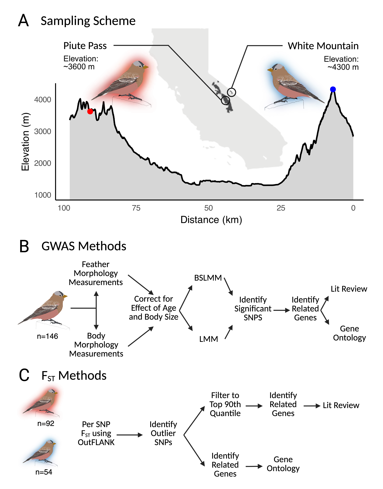
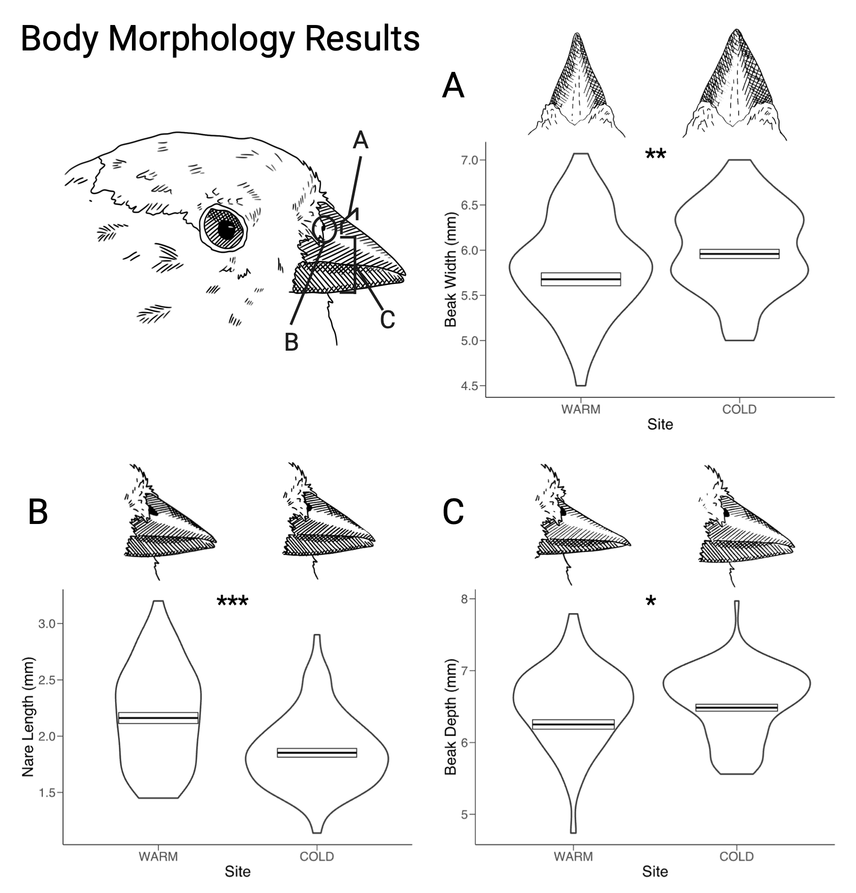
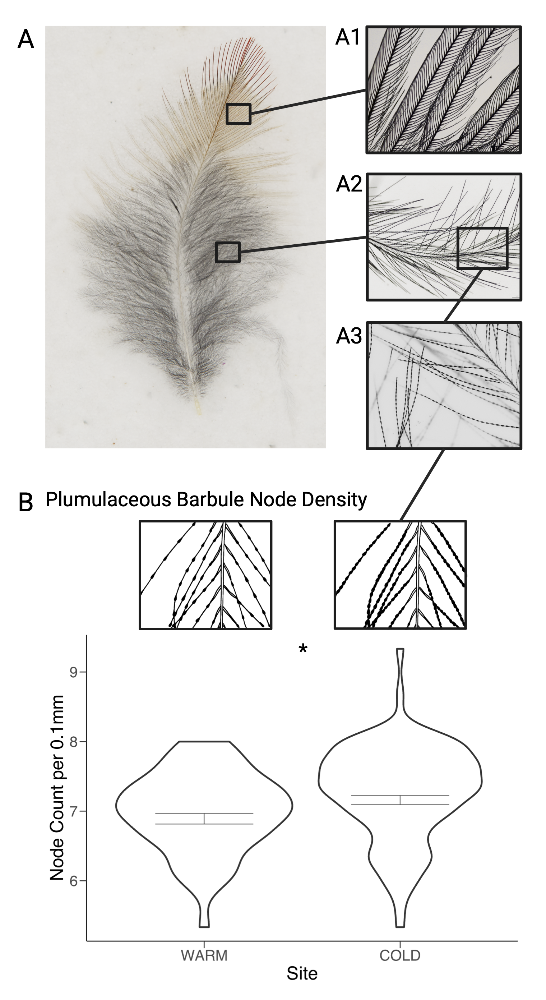
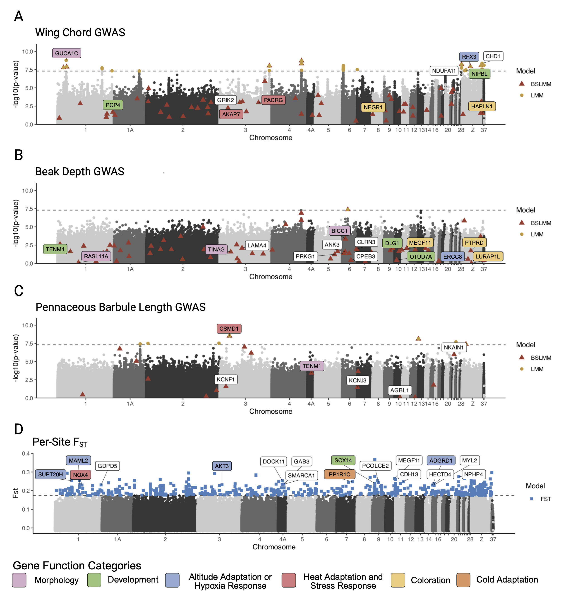
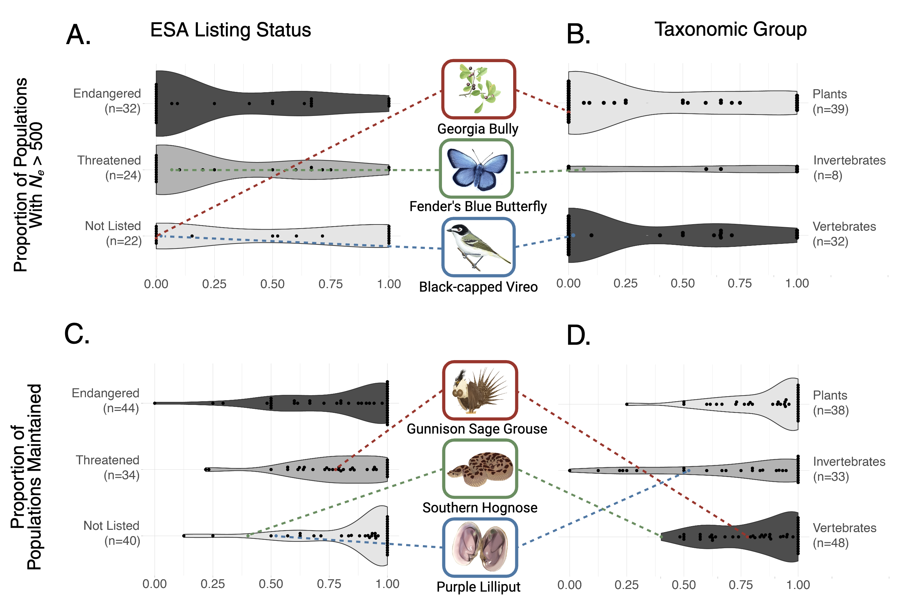
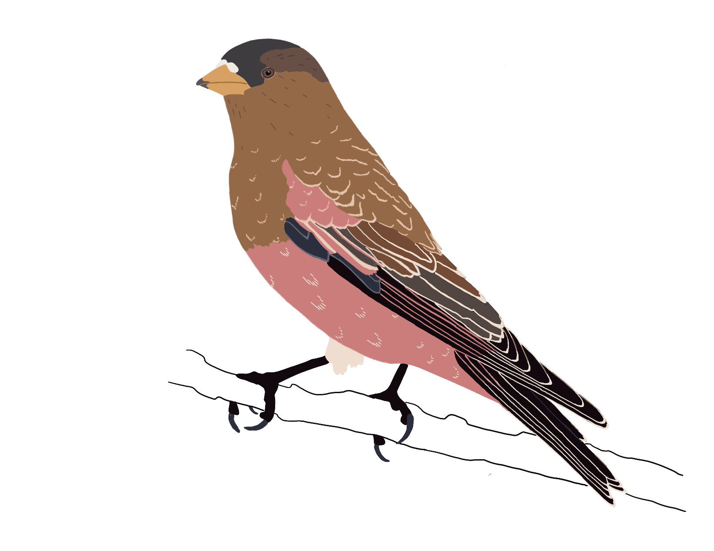
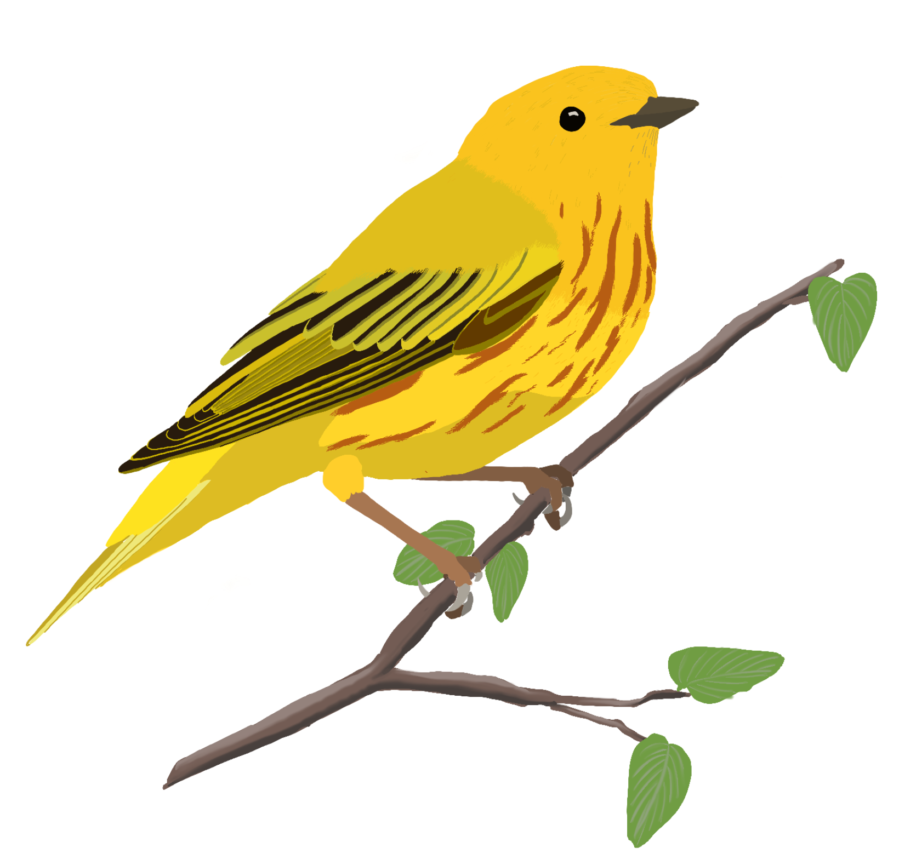
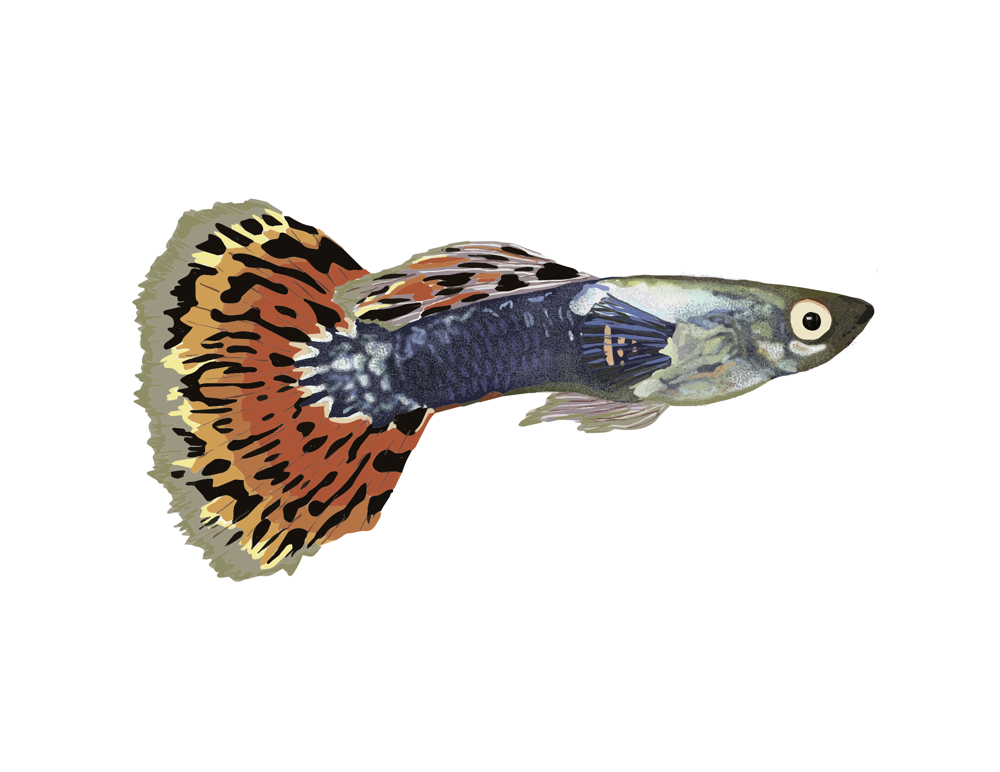

Illustration and Visual Communication
Alongside my research, I am interested in scientific illustration, figure design, and nature journaling as ways of observing and communicating ecological ideas. My work includes both published figures created in support of scientific projects and independent creative work centered on birds, landscapes, and natural history.
Published Works
The Genetic and Morphological Basis of Local Adaptation to Elevational Extremes in an Alpine Finch
Understanding patterns and mechanisms underlying local adaptation is becoming increasingly important for species conservation amid anthropogenically driven environmental change. Alpine systems are experiencing particularly intense pressure from environmental change resulting from increased rates of warming and corresponding loss of snow and ice. We integrate morphological and genetic analyses to identify traits important for local adaptation in one of the highest elevation breeding birds in North America, the Sierra Nevada Gray-crowned Rosy-Finch. We performed an in-depth analysis of how traits with known links to thermoregulation in birds such as wing length, bill size, and feather microstructure vary between two populations at sites with contrasting climate and environmental conditions. We identified loci underlying these traits using a genome-wide association study and further examined regions of the genome related to altitude adaptation and cold tolerance using FST outlier tests. Together, these results indicate that temperature, food availability, and alpine landscape features may impose multifaceted and potentially conflicting selective pressures on morphological traits important to adaptation in alpine birds. Overall, this work represents one of the first in-depth analyses of the genetic basis of adaptation in an alpine specialist songbird.
View Publication
Figure 1. (A) Map of California highlighting the sampling location and design for two populations of Gray-crowned Rosy-Finch, Piute Pass and White Mountain. Elevation is noted for each site along with an elevation transect. (B) Overview of methods for GWAS analysis. Morphological measurements were corrected for the effects of sex, age, and body size before being input into BSLMM and LMM models. (C) Overview of the methods for the FST analysis. The output of both analyses were analyzed to identify significant SNPs and related genes.

Figure 2. Violin plots of beak morphology raw measurement: (A) beak width, (B) nare length, and (C) beak depth. Overlaid are the corrected mean trait measurements shown with a crossbar. Significance of the effect of site on the morphological trait is shown for each comparison. Piute Pass is the warm site and White Mountain is the cold site. We found that nares were longer while beak widths and depths were smaller in the warmer environment.

Figure 3. (A) Photograph showing a body feather from a Sierra Nevada Gray-crowned Rosy-Finch captured at White Mountain. Highlighted is a microscopic image of the pennaceous and plumulaceous barbule structure. (B) Violin plots of node density raw measurements, with illustrations above of the structure of plumulaceous barbule nodes. Overlaid on the plots are the corrected mean trait measurements shown with a crossbar. Significance of the effect of site on the morphological trait is shown for each comparison.

Figure 4. Manhattan plot depicting the results of the LMM analysis on beak depth (A), wing chord (B), and pennaceous barbule length (C) with –log10(p-value) on the y-axis and the mapped Zebra Finch chromosome location on the x-axis. Significant SNPs from the BSLMM analysis are overlaid onto the LMM results, plotted with their corresponding p values, and corresponding genes are noted. Also plotted are the results of the per-site FST results (D), using the 90th quantile threshold of 0.235. Corresponding genes are also shown, and functional categories are highlighted by color category. See Table 1 for more functional details.
Ongoing Projects
A widespread gap in U.S. Endangered Species Act implementation: Risk of genetic erosion within populations
We apply indicators of intraspecific genetic diversity as adopted by the Convention on Biological Diversity to 161 species assessed for classification under the U.S. Endangered Species Act (ESA). In addition to contributions to data analysis and writing, I illustrated all animals and developed all figures for this paper.
View Publication
Figure 1. Genetic indicators by ESA classification status and taxonomic group.

Figure 2. Summary of the need, effort, benefit, key results, and takeaway of evaluating the 459 genetic indicators in at-risk species assessed under the ESA using the SSA framework.
Portfolio
A selection of independent creative work, including nature journaling, observational sketches, and other illustrations inspired by birds, ecology, and the natural world.

Bank Swallow

Brown-capped Rosy Finch

Yellow Warbler

Wild Guppy